Physics
45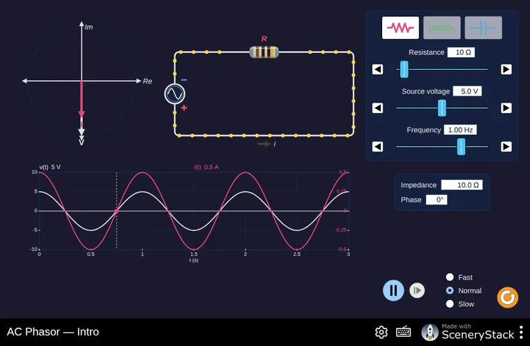
ACAC Phasor
AC phasor simulation exploring resistors, inductors, and capacitors across four screens — Intro (single element), Series RLC, Resonance, and Power.
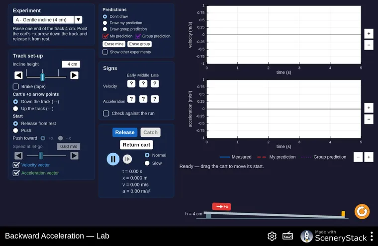
BABackward Acceleration
Predict, then measure, the velocity and acceleration graphs of a cart released down an incline, braked on a level track, and pushed up a ramp so it rolls back down — with a virtual cart or a real PASCO Smart Cart over Web Bluetooth. Students sketch predictions on the graphs, check a sign table, and see why the acceleration stays negative while the cart speeds up on the way down.
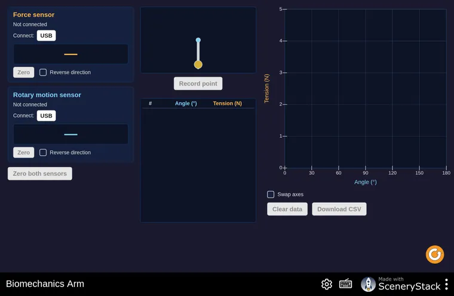
BABiomechanics Arm
Live data acquisition for a model-arm torque lab: connect a PASCO Wireless Force Acceleration Sensor and a Wireless Rotary Motion Sensor over Bluetooth or USB, zero and orient each one, then record, graph and export the string tension against the arm angle. A demo mode simulates the arm when no sensors are at hand.
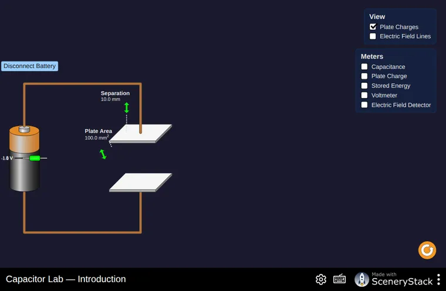
CLCapacitor Lab
Explore how a capacitor works: change plate area and separation, insert a dielectric, and build series and parallel combinations while watching charge, voltage, E-field and stored energy.
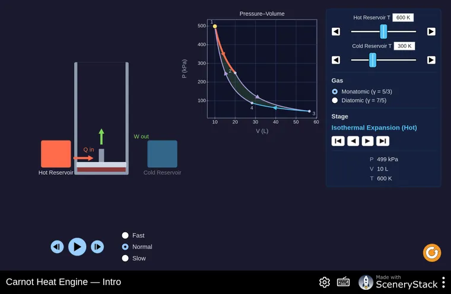
CHCarnot Heat Engine
Explore the Carnot cycle across three screens: a piston-cylinder tied to a live PV diagram, a quantitative efficiency lab with a T–S view, and the same cycle reversed as a refrigerator or heat pump.
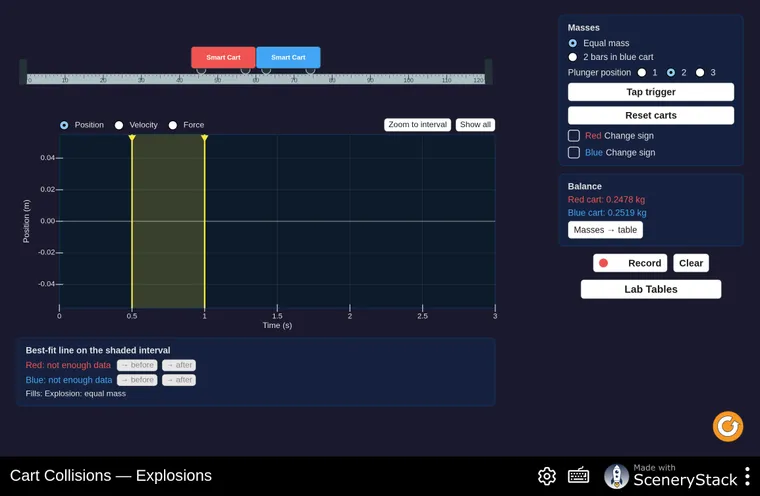
CCCart Collisions
Collide and launch two PASCO Smart Carts on a track — spring-plunger explosions, Velcro (completely inelastic) and magnetic (elastic) collisions, with equal or unequal masses. Fit lines to position–time graphs, fill momentum and kinetic-energy tables, and stream real Smart Carts over Web Bluetooth.
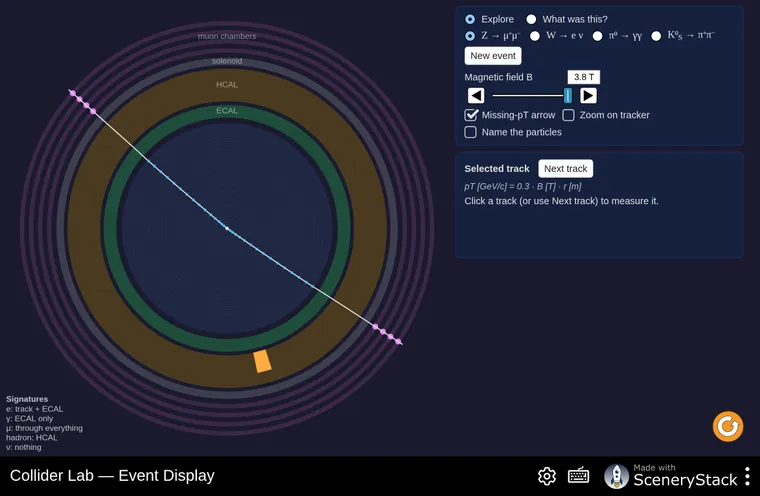
CLCollider Lab
You are the detector: read simulated collisions (curving tracks give momentum through pT = 0.3 B r, calorimeter layers identify particles, missing pT reveals neutrinos), time K0S decays, and build the dimuon mass spectrum from 100,000 real CMS events to weigh the Z boson.
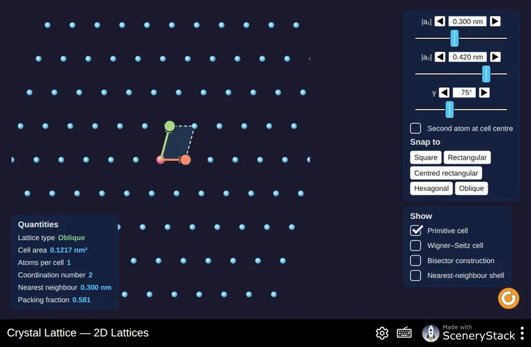
CLCrystal Lattice
Explore crystal structure across five screens: the five 2D Bravais lattices, cubic unit cells and packing factors, hexagonal vs cubic close packing, Miller indices, and aperiodic order — Penrose tilings and the hat monotile, with diffraction as sharp as a crystal's but a symmetry no crystal can have.
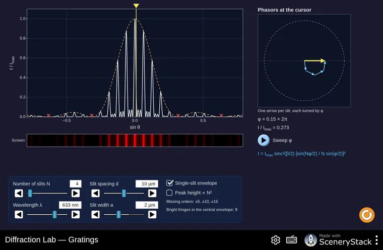
DLDiffraction Lab
Fraunhofer diffraction for modern physics: add one phasor per slit to see grating maxima sharpen, resolve close spectral lines with R = mN, image two stars through a circular aperture to find the Airy disk and the Rayleigh criterion, and record and reconstruct a hologram.
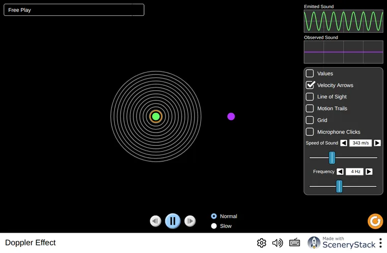
DEDoppler Effect
Interactive simulation of the Doppler Effect — visualizes how the frequency of sound waves shifts with relative motion between source and observer.
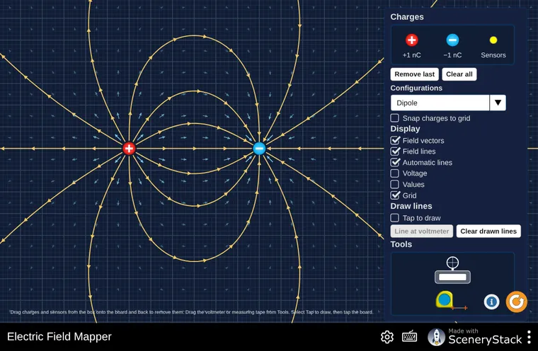
EFElectric Field Mapper
Explore electric fields and potential from movable point charges with vector arrows, field lines, and a measuring probe.
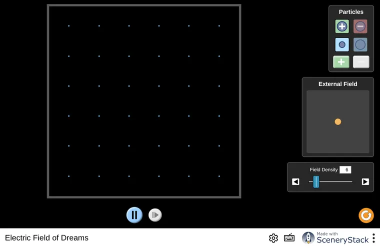
EFElectric Field of Dreams
SceneryStack port of the PhET 'Electric Field of Dreams' simulation. Place charged particles and observe Coulomb interactions and an adjustable uniform external field.
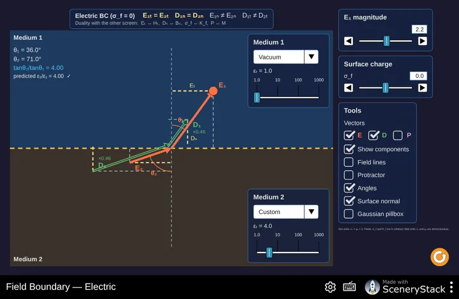
FBField Boundary
Explore Maxwell boundary conditions for E/D and B/H at a planar interface between two media.
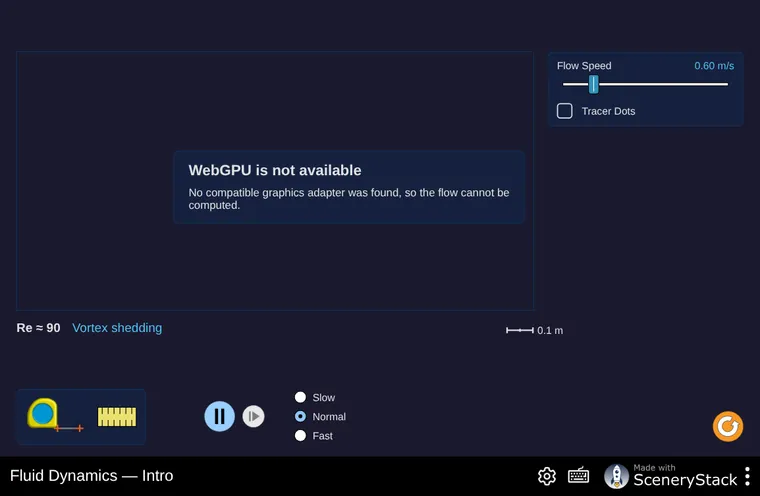
FDFluid Dynamics
Flow past an obstacle, from laminar streamlines to a Kármán vortex street to a turbulent wake — real-time GPU fluid simulation across Intro and Lab screens.
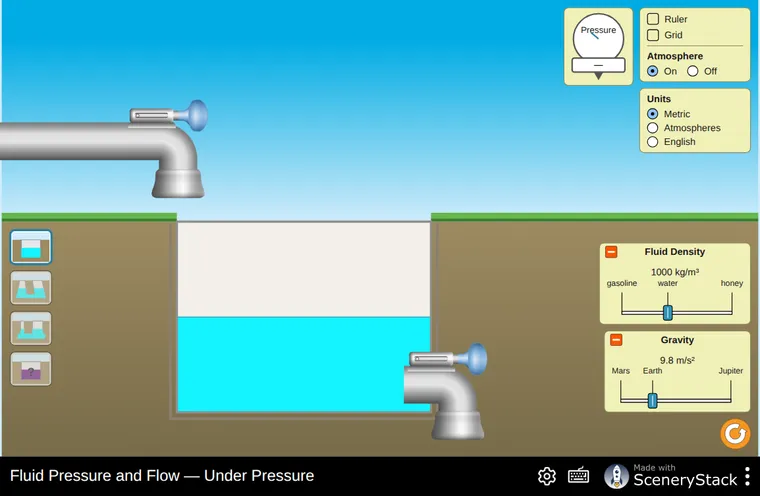
FPFluid Pressure and Flow
SceneryStack recreation of PhET's Fluid Pressure and Flow — Under Pressure, Flow, and Water Tower screens for hydrostatic pressure, Bernoulli flow, and a water tower with a hose.
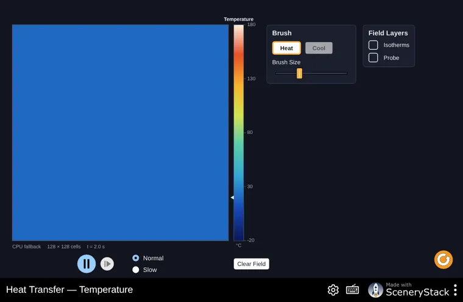
HTHeat Transfer
Heat as a field on a WebGPU engine — temperature, conduction, convection, transport balance, and materials across five screens, with GPU-native compute shaders and a CPU reference backend.
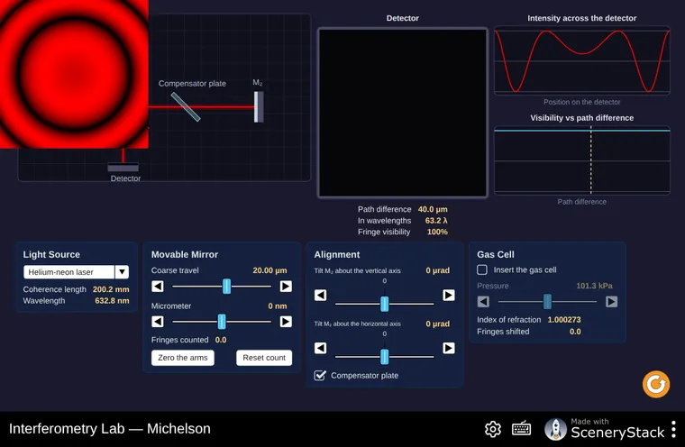
ILInterferometry Lab
Physical-optics simulation of Michelson, Mach-Zehnder, and Fabry-Perot interferometers: optical path length, phase, coherence, and fringe formation.
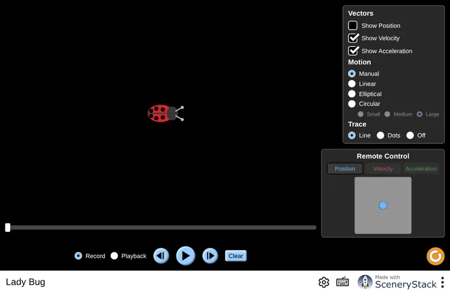
LBLadybug Motion 2D
SceneryStack port of the PhET 'Ladybug Motion 2D' simulation. Explore 2D motion, position, velocity, and acceleration using a ladybug on a rotating platform.
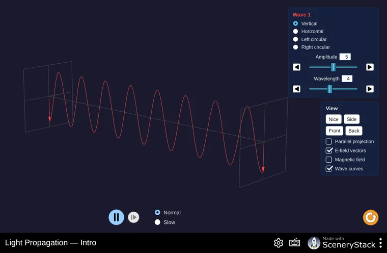
LPLight Propagation
Interactive simulation of how light propagates through polarizers and wave plates — Intro, Polarization, Wave Plates, and Lab screens.
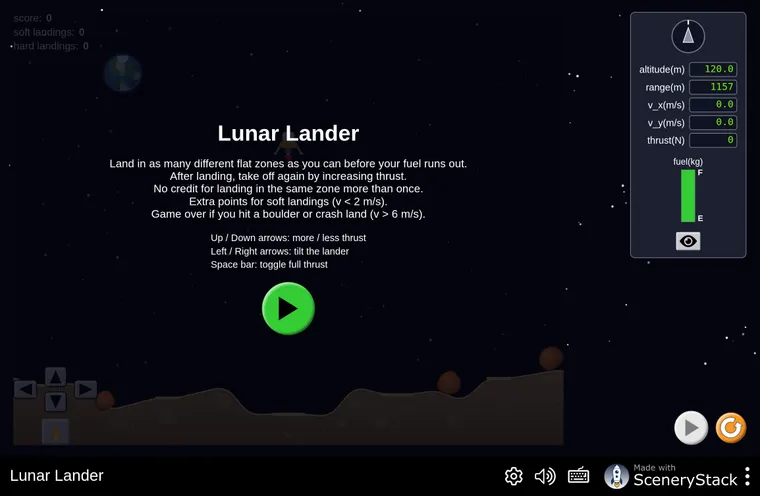
LLLunar Lander
SceneryStack port of the classic PhET Flash 'Lunar Lander' simulation. Pilot a lunar module to a soft landing by managing thrust and tilt against gravity.
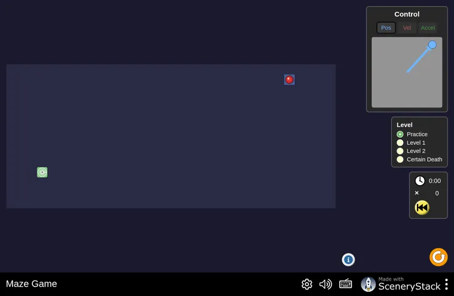
MGMaze Game
SceneryStack port of the PhET 'Maze Game' simulation. Drive a particle through tile-based mazes using position, velocity, or acceleration control modes.
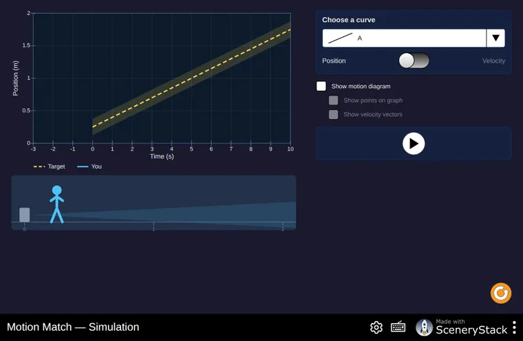
MMMotion Match
Match target position-versus-time and velocity-versus-time graphs by moving a character with pointer controls or by walking in front of a PASCO Wireless Motion Sensor.
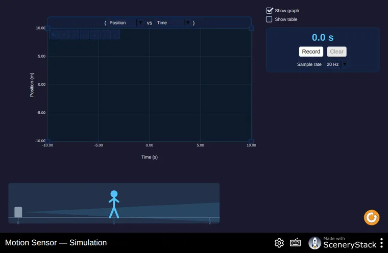
MSMotion Sensor
Record position over time with the mouse or a PASCO Wireless Motion Sensor over Web Bluetooth, and plot position, velocity and acceleration on a graph whose axes you choose.
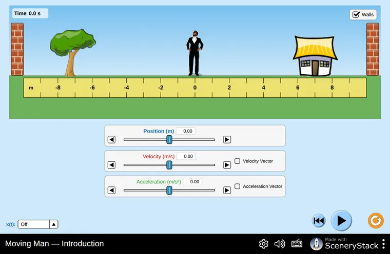
MMMoving Man
SceneryStack port of the PhET Java 'Moving Man' simulation. Explore 1D kinematics by dragging a man or using position/velocity/acceleration sliders.
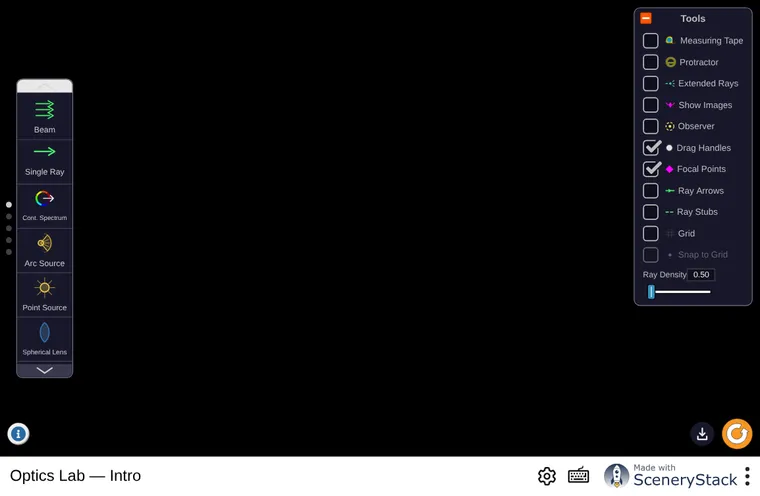
OLOptics Lab
Web-based geometric optics simulation. Supports ray sources, parallel and divergent beams, mirrors, lenses, beam splitters, and refraction interfaces.
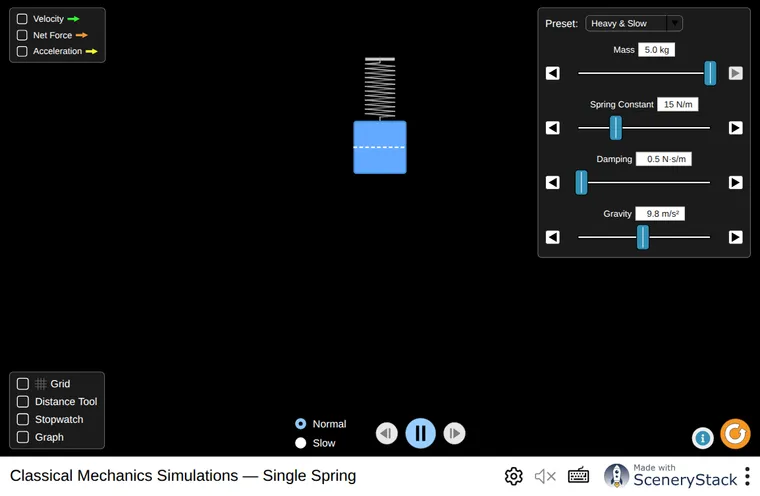
OAOscillations and Chaos
Collection of four classical mechanics simulations exploring oscillations and chaos: single spring, double spring, pendulum, and double pendulum.
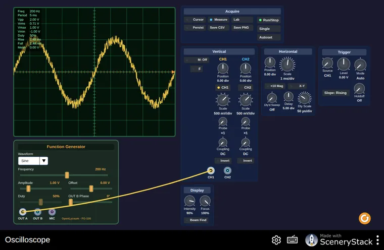
OOscilloscope
Single-screen SceneryStack bench oscilloscope. Display a synthetic function-generator signal or live microphone audio on a phosphor-green CRT graticule, with two channels, triggering, X-Y and FFT modes, measurement cursors, and live auto-measurements.
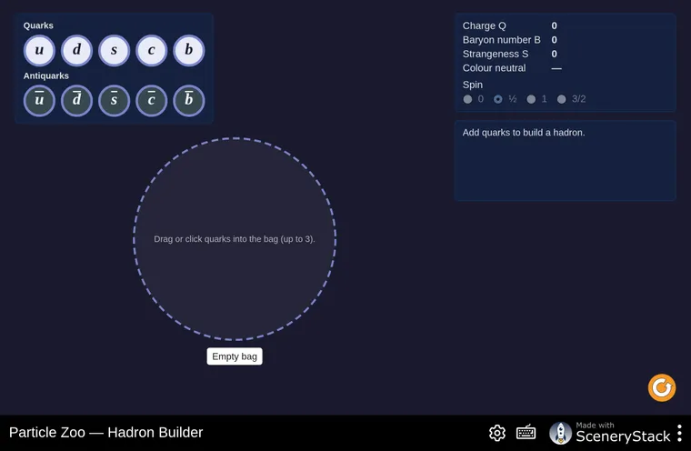
PZParticle Zoo
Build hadrons from quarks with live charge, baryon number and strangeness; predict the Omega-minus from the 1962 Eightfold Way; pull a quark pair apart until the colour string snaps; and judge proposed reactions with a conservation ledger and quark-level Feynman vertices.
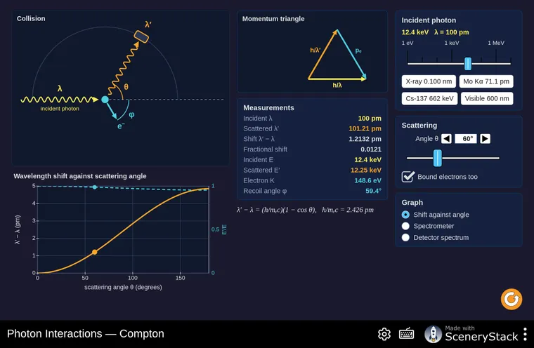
PIPhoton Interactions
Photons as particles in four screens: Compton scattering with the momentum triangle, Compton's spectrometer and a detector's Compton edge; an X-ray tube's bremsstrahlung spectrum, Duane-Hunt limit and characteristic lines; pair production near a nucleus with energy and momentum budgets; and electron-positron annihilation with a PET scanner ring.
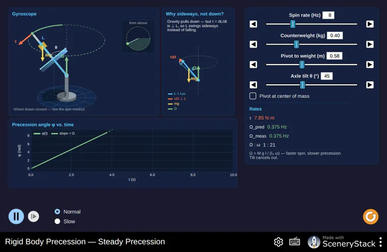
PPrecession
Rigid-body dynamics of a spinning gyroscope: steady precession under gravity, nutation, and torque-free tumbling.
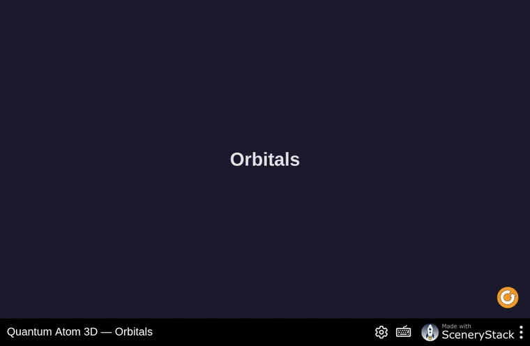
QAQuantum Atom 3D
3D hydrogenic atom explorer: orbitals and probability density with phase colouring, radial distributions, superpositions that evolve in time, the angular-momentum vector model, normal and anomalous Zeeman splitting with selection rules, and the degeneracy of the isotropic 3D oscillator.
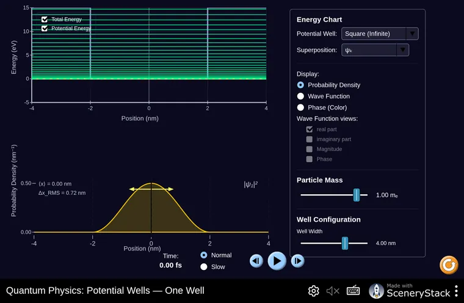
QPQuantum Potential
Interactive quantum mechanics lab: solve the 1D Schrödinger equation in real time for analytically solvable and multi-well potentials, with wave functions, probability densities, energy levels, and time evolution.
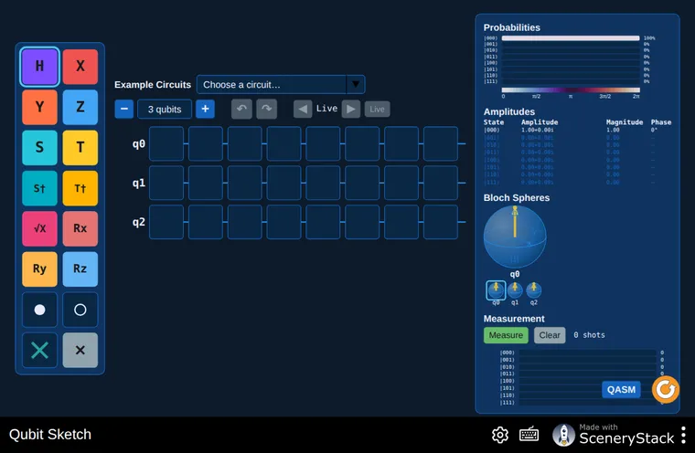
QSQubit Sketch
Drag-and-drop quantum circuit builder with a live state simulator. Place quantum gates and watch probabilities, amplitudes, Bloch spheres, and measurements update in real time.
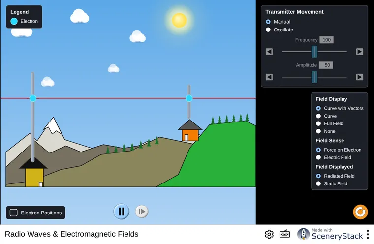
RWRadio Waves
SceneryStack port of the PhET 'Radio Waves & Electromagnetic Fields' simulation, rebuilt from the legacy PIXI.js + Backbone version. Wiggle an electron and watch EM radiation propagate.
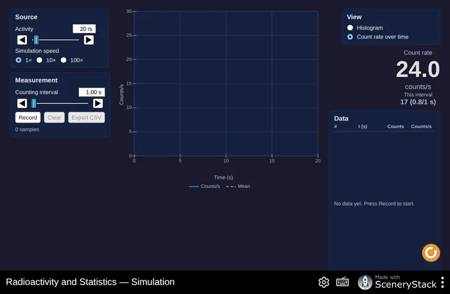
RARadioactivity and Statistics
Counting-statistics laboratory: measure radioactive decay — simulated or from a PASCO Wireless Geiger Counter over Web Bluetooth — and compare the distribution against Poisson and Gaussian theory.
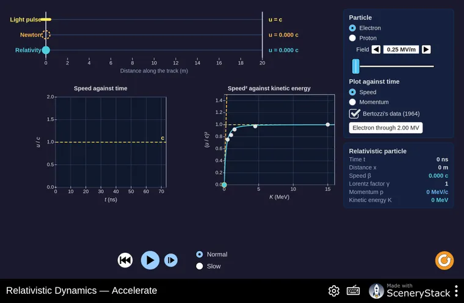
RDRelativistic Dynamics
Relativistic momentum and energy across four screens: a particle pushed toward c against Newton's prediction and Bertozzi's 1964 data, the energy–momentum triangle and mass shell seen by moving observers, two-body collisions viewed from any frame, and threshold energies for fixed-target and collider reactions.
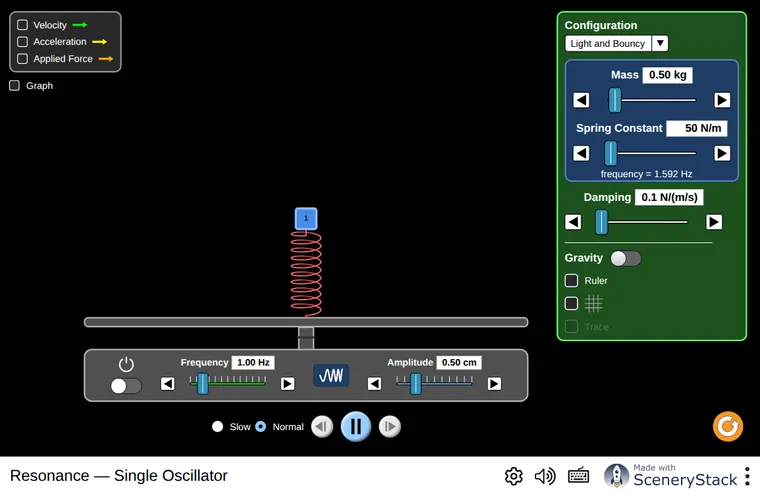
RResonance
Interactive simulation of resonance in driven oscillating systems. Visualizes driven mass-spring systems and Chladni plate patterns.
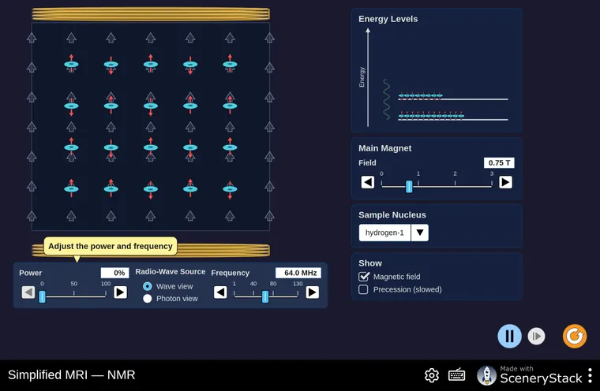
SMSimplified MRI
How magnetic resonance works, from nuclear spins to imaging. Tune radio waves until nuclei absorb and flip, add gradient magnets so only one slice of a head resonates, then watch a tissue's magnetization precess and relax after an RF pulse. A SceneryStack port of PhET's retired Java sim Simplified MRI, with its physics oddities fixed and a new relaxation screen.
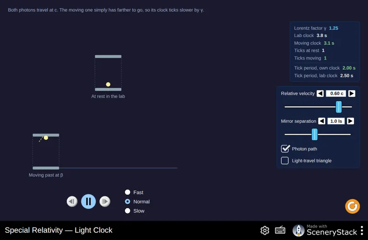
SRSpecial Relativity
Explore special relativity across five screens: a moving light clock, an interactive Minkowski spacetime diagram, length contraction (ladder and barn), the twin paradox, and the relativistic Doppler effect.
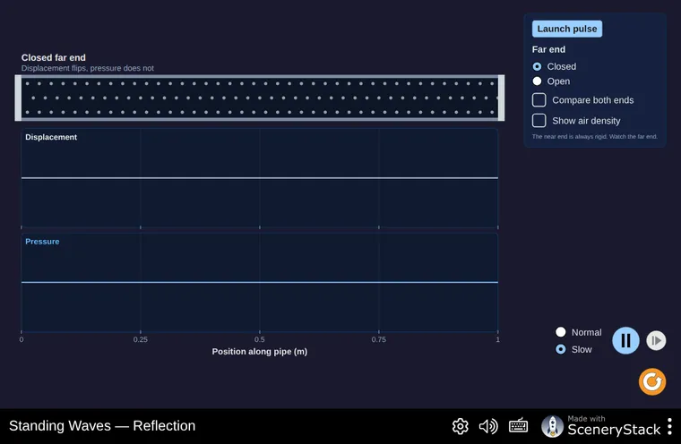
SWStanding Waves
Longitudinal standing waves in a pipe: displacement, velocity and pressure phase relationships, open vs. closed end reflection, and the harmonic series of open and stopped pipes.
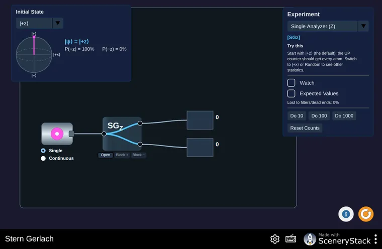
SGStern–Gerlach
Interactive Stern–Gerlach experiment: assemble analyzers, magnets, and counters; fire spin-½ / spin-1 atoms; compare Monte Carlo counts with analytic quantum predictions.
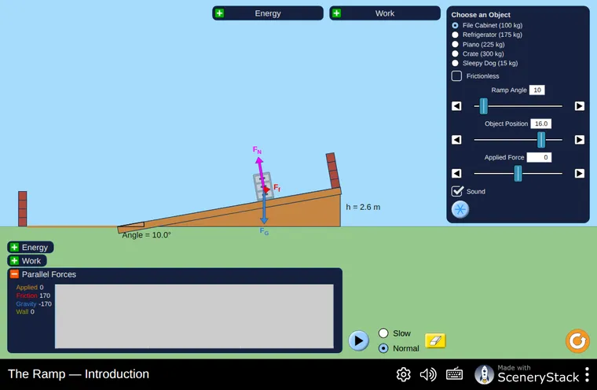
TRThe Ramp
SceneryStack port of the PhET Java 'The Ramp' simulation. Explore forces on an inclined plane with friction, energy conservation, and applied forces. Features record/playback, force charts, and comparison objects.
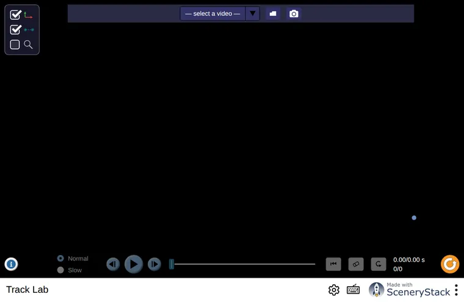
TLTrack Lab
Browser-based video motion-analysis tool. Load a video, calibrate real-world distances, and auto-track objects across frames using computer vision.
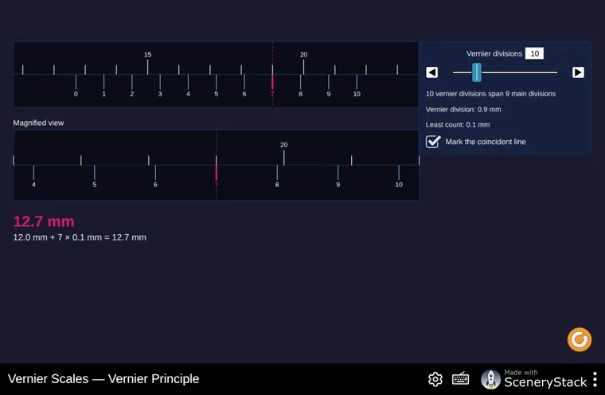
VSVernier Scales
Learn to read vernier calipers and vernier scales in general.
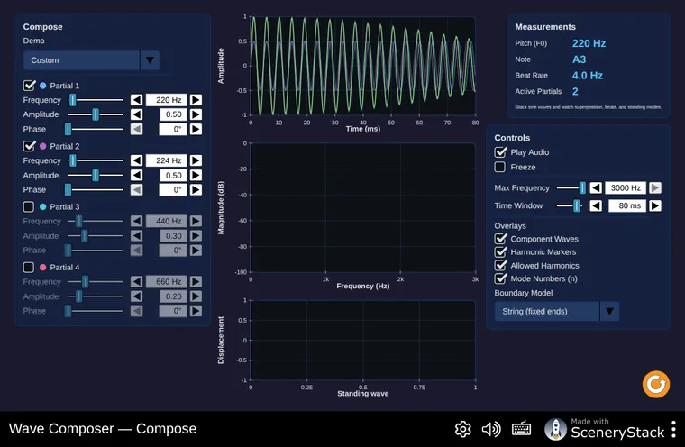
WCWave Composer
Three-screen VoceVista-style real-time voice-analysis simulation. Analyzes microphone input for waveform, spectrum, and composition.
Chemistry
10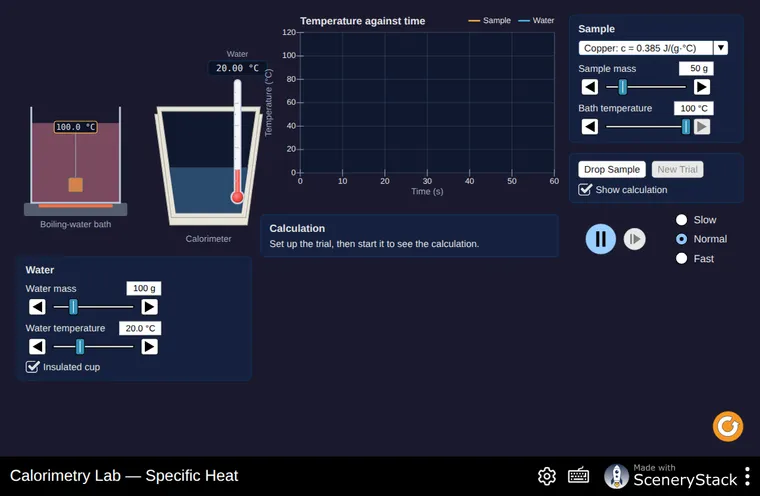
CLCalorimetry Lab
Gen Chem thermochemistry: drop a hot metal into water to find its specific heat, measure ΔH of neutralization, dissolving salts and Mg + HCl in a coffee-cup calorimeter with drift-line extrapolation, calibrate a bomb calorimeter with benzoic acid and burn fuels, and build ΔH from reversed and scaled step reactions with Hess's law.
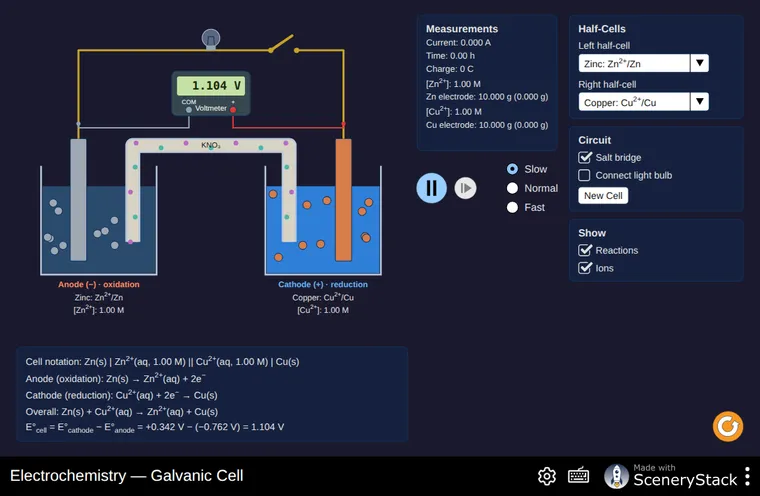
EElectrochemistry
Gen Chem electrochemistry: build galvanic cells from nine half-cells and watch them run down, follow the Nernst equation on a plot of E against log Q to equilibrium, and test Faraday's law with copper and silver plating and the electrolysis of copper(II) chloride and water.
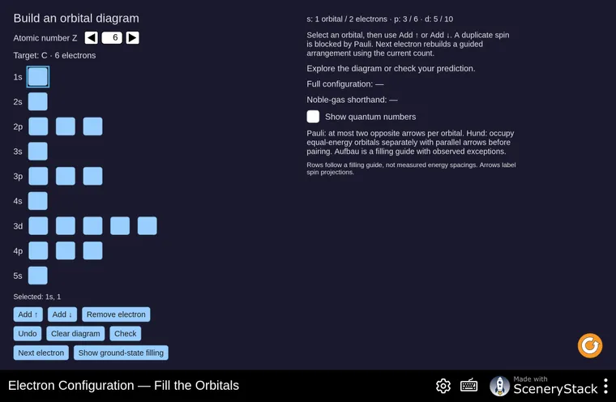
ECElectron Configuration
Build orbital diagrams, discover periodic-table patterns, form common ions, and solve electron-configuration challenges for first-semester general chemistry.
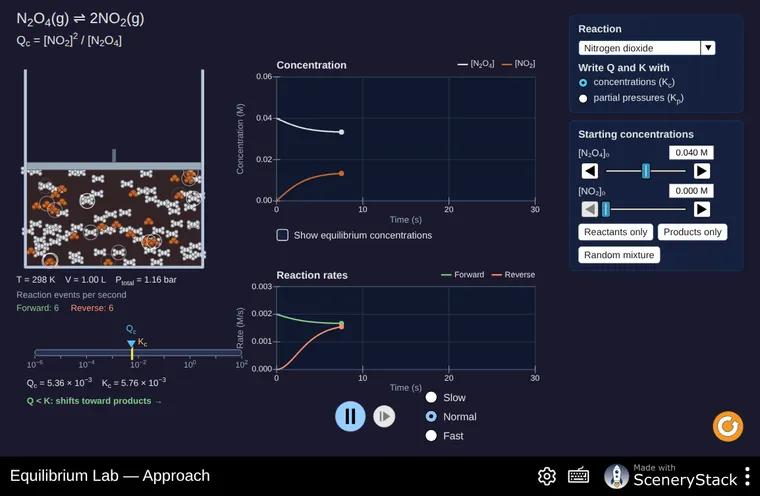
ELEquilibrium Lab
Gen Chem chemical equilibrium: watch a mixture react until Q reaches K with the forward and reverse rates equal, work ICE tables against a live simulation, push a mixture at equilibrium with Le Chatelier stresses and see whether Q or K moved, and find ΔH° and ΔS° from a van 't Hoff plot.
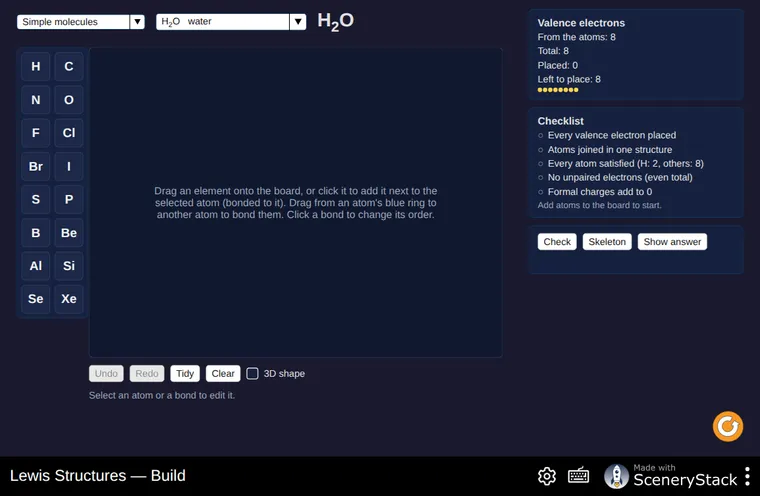
LSLewis Structures
Lewis structures for General Chemistry: count valence electrons, draw bonds and lone pairs on a board with live formal-charge and octet checks, compare resonance forms with curved arrows and their hybrid, practise in a three-level challenge with hints, and see each finished structure's VSEPR shape in 3D.
Light and Atoms
Light and atoms for General Chemistry: the electromagnetic spectrum with c = λν and E = hν, a Bohr hydrogen atom that emits and absorbs photons, and the line spectra of gases and flames through a spectroscope.
MolScope
A browser molecular viewer in the spirit of Jmol: explore small molecules, proteins, DNA and crystals in 3D, measure bonds and angles, and drive it with Jmol-style scripts.
Periodic Trends
Gen Chem periodic trends from hydrogen to krypton: click an element or drag across a period or down a group to watch atomic radius, ionization energy, electron affinity and electronegativity change, explained through effective nuclear charge (Slater's rules) and shielding.
Spectroscopy Lab
Read infrared, NMR and UV-Vis spectra against a 3D molecule: click a peak to see the atoms, vibration or orbital behind it.
Titration Lab
Gen Chem acid–base titration: titrate at the bench with a burette, an indicator and a pH meter (including an unknown acid), compare exact titration curves for strong, weak and polyprotic acids and bases with their buffer regions and species, and choose an indicator by its endpoint error.
Astronomy
14Basic Coordinates and Seasons
SceneryStack port of the NAAP 'Basic Coordinates and Seasons' lab. Explore terrestrial and celestial coordinates and how Earth's axial tilt produces the seasons across three screens.
Exoplanets Database
A friendly front end to the NASA Exoplanet Archive across four screens: the archive's headline counts and planets per discovery method, a simplified sortable table with filters written in the archive's own syntax and a planet card compared with Earth and the Sun, eight preset plots of mass, period, radius and distance coloured by discovery method, and a plot builder for any two quantities.
Extrasolar Planets
Interactive simulation of two exoplanet-detection methods — radial velocity (Doppler wobble) and transit (light-curve dip).
Habitability Lab
Why can one planet keep liquid water while another cannot? Five screens: a bare planet's energy balance and equilibrium temperature, a grey greenhouse atmosphere with the phase diagram of water, the Kopparapu habitable-zone edges with real exoplanets from the NASA Exoplanet Archive, a habitable zone that moves as the star evolves, and atmospheric escape from molecular speeds to the cosmic shoreline.
Habitable Zones
SceneryStack port of the NAAP 'Habitable Zones' lab. Compare circumstellar and galactic habitable zones with orbiting planets in two screens: Circumstellar and Galactic / Milky Way Habitability.
Mercury Elongations
Explore why Mercury never appears far from the Sun. Synchronized planetarium and orbital views connect the Sun–Mercury angle in Berea's sky with real Earth and Mercury ephemerides.
Motions of the Sun
SceneryStack port of the NAAP 'Motions of the Sun' lab. Trace the Sun's daily path, compare sidereal and solar time, and explore the zodiac on the celestial sphere.
Planetary Configurations
Explore planetary configurations from a Sun-centered view: elongation, conjunctions and quadratures, synodic and sidereal periods, and retrograde motion, compared with Ptolemy's geocentric model.
Rotating Sky
SceneryStack port of the NAAP 'Rotating Sky' lab. Explore how the sky appears to rotate for an observer on Earth through a horizon system, a celestial sphere, and a combined interactive explorer.
Solar System Models
SceneryStack port of the NAAP 'Solar System Models' lab. Compare the Earth-centered Ptolemaic model (deferent and epicycle) with the Sun-centered system and the planetary configurations it produces.
Stellar Wobble
Find an exoplanet with the radial-velocity method across four screens: how a star's speed is measured from the Doppler shift of its spectral lines, a planet pulling its star around their center of mass (seen as only the telescope sees it), why the signal depends on our viewing angle and gives only a minimum mass, and fitting noisy night-by-night measurements to find the planet.
Transit Hunter
Find exoplanets by the shadows they cast, across five screens: why a planet crossing its star dims it, why only lined-up orbits transit, reading a planet's size and distance from a light curve, hunting for planets in real Kepler and TESS measurements, and combining the transit with the star's wobble to tell rock from gas.
Variable Star Photometry
SceneryStack port of the NAAP 'Variable Star Photometry' lab. Register CCD star-field images, blink-compare epochs, perform aperture photometry, and find periods from a differential-magnitude light curve.
Zenith
SceneryStack planetarium renderer. Project the night sky for an observer on Earth from latitude, longitude, and local sidereal time.
Earth Science
1No simulations match these filters.